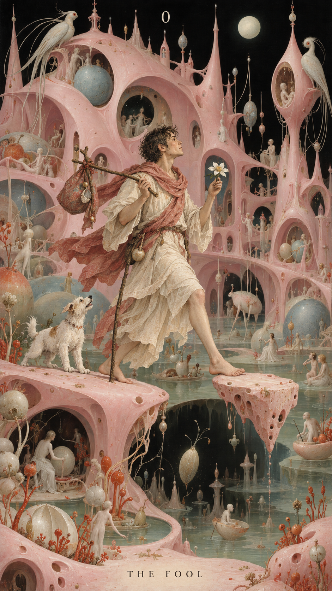
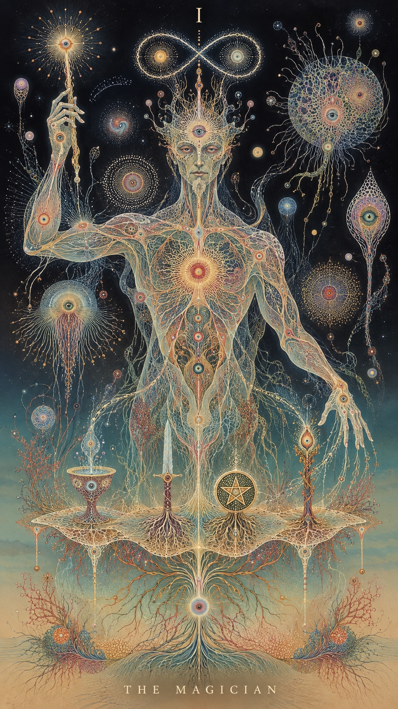
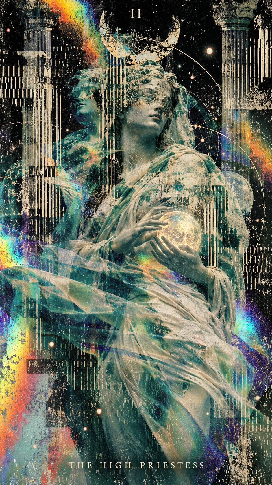
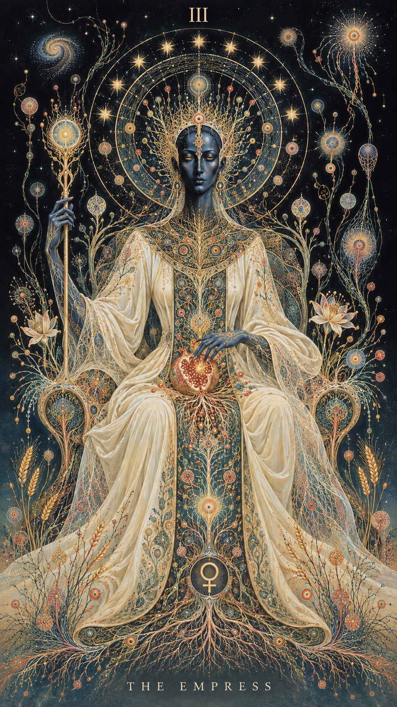
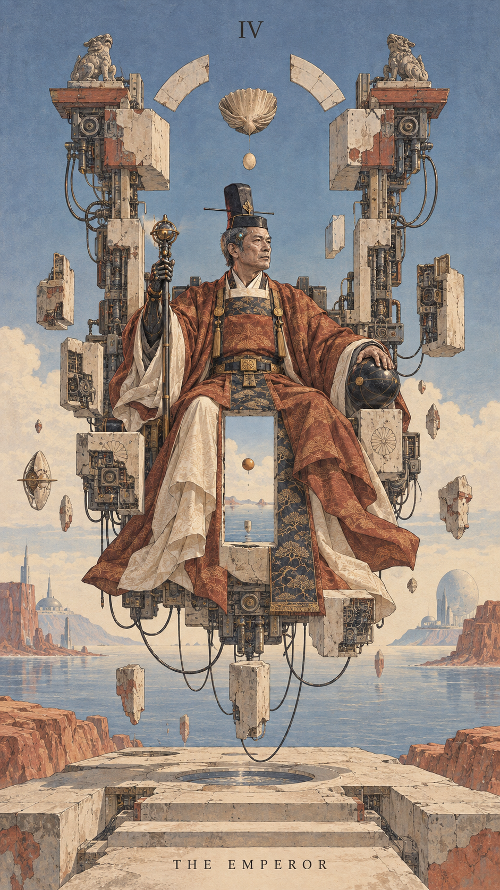

00 / The Fool
~/DITHERTO / RESPONSIVE GALLERY
One palette across the whole collection.
Give each card its own light.
Preparing images…





Move the width slider or resize your window. Every image is recalculated from its original; exposure stays personal. Show the originals to compare, then bring the shared look back.
import { observeDitherDOM } from 'ditherto/dom';
const gallery = observeDitherDOM('img.dither', {
palette: [[37, 33, 59], [139, 80, 102], [221, 167, 123], [244, 236, 207]],
algorithm: 'atkinson', resample: 'area'
});
await gallery.ready;
await gallery.images[0].update({ exposure: 0.3 });
// On unmount:
gallery.destroy();Copies the shared style and each image’s current exposure and contrast. Automatic sizing follows the layout.
The helper runs on the calling thread by default. This page supplies a shared worker through the render option. See the example source.